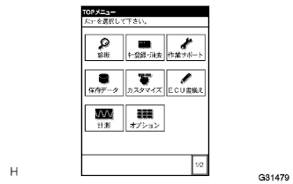
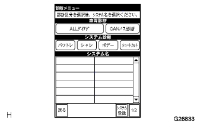
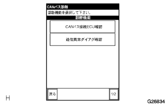
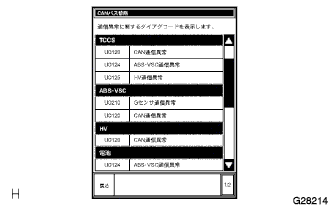
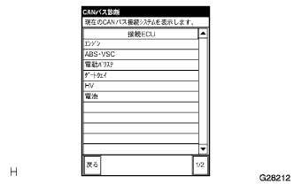
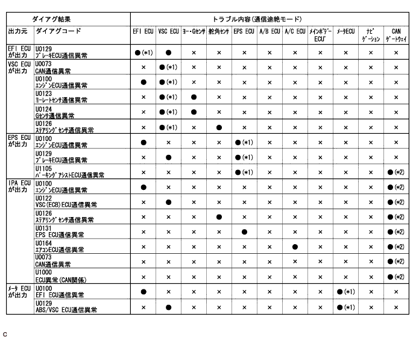

).
).CAN Communication System Diagnosis System |
 |
Select "Diagnosis" on the TOP menu of the SST (TaSCAN).
 |
Select "CAN Bus Diagnosis" on the diagnosis menu screen.
 |
Select "Communication Malfunction DTC Check" on the CAN bus diagnosis screen.
 |
The screen appears and the malfunction DTCs related to CAN communication are displayed by ECU.
Select "CAN Bus Connected ECU Check" on the CAN bus diagnosis screen of the SST (TaSCAN).
 |
The screen appears and the ECUs and sensors currently connected correctly are displayed.
Check the screen display for approximately 1 minutes and check that there are no items alternating between displayed and not displayed.
ECUs and Sensors Connected to V Bus Circuit
Engine Control Computer (EFI ECU)
Instrument Panel Junction Block Assembly (Main Body ECU)
Combination Meter Assembly (Meter ECU)
Power Steering Computer Assembly (EPS ECU)
Air Conditioner Amplifier Assembly (A/C ECU)
Airbag Computer Assembly (A/B ECU)
ABS & Traction Actuator Assembly (VSC ECU)
Steering Sensor (Steering Angle Sensor)
Yaw Rate Sensor (Yaw / G Sensor)
Navigation Receiver Assembly (NAVI ECU)
Network Gateway Computer (CAN Gateway ECU)
Accessory Bus Buffer
ECUs Connected to MS Bus Circuit
Smart Key Computer Assembly (Certification ECU)
ECUs Connected to V Bus No.2 Circuit
4WD Computer Assembly (4WD ECU)
Television Camera Controller (IPA ECU)
Systems (ECUs, sensors) using CAN communication differ depending on the model and option settings, so check which systems (ECUs, sensors) are equipped on the vehicle being worked on.
TaSCAN Display and Method for Checking Vehicle Equipment
| ECU/Sensor Name | TaSCAN (CAN Bus Connected ECU Check) Display Name | Method for Checking Whether Equipped |
|---|---|---|
| Engine Control Computer (EFI ECU) | TCCS CVT | All Models |
| Instrument Panel Junction Block Assembly (Main Body ECU) | Main Body | All Models |
| Combination Meter Assembly (Meter ECU) | Meter | All Models |
| Power Steering Computer Assembly (EPS ECU) | Electric Power Steering | All Models |
| Air Conditioning Amplifier Assembly (A/C ECU) | A/C | All Models |
| Airbag Sensor Assembly Center (A/B ECU) | Airbag | All Models |
| ABS & Traction Actuator Assembly (VSC ECU) | ABS/VSC | All Models |
| Steering Sensor (Steering Angle Sensor) | Steering Angle Sensor | All Models |
| Yaw Rate Sensor (Yaw/G Sensor) | Yaw Rate/G Sensor | All Models |
| Navigation Receiver Assembly (NAVI ECU) | AVN | Models with Genuine Toyota Display-integrated HDD Navigation |
| Smart Key Computer Assembly (Certification ECU) | Certification | All Models |
| Network Gateway Computer (CAN Gateway ECU) | CAN Gateway |
|
| 4WD Computer Assembly (4WD ECU) | 4WD | 4WD Models |
| Television Camera Controller (IPA ECU) | IPA | Models with Genuine Toyota Display-integrated HDD Navigation |
| Accessory Bus Buffer | Accessory Gateway | Models with Dealer Options Using CAN Communication |
).Engine Control Computer (EFI ECU) / "TCCS" "CVT" (TaSCAN Display Name)
| DTC No | Diagnosis Item (TaSCAN Display Name) |
|---|---|
| U0129 | Brake ECU Communication Malfunction |
Combination Meter Assembly (Meter ECU) / Meter (TaSCAN Display Name)
| DTC No | Diagnosis Item (TaSCAN Display Name) |
|---|---|
| U0100 | EFI ECU Communication Malfunction |
| U0129 | ABS/VSC ECU Communication Malfunction |
Power Steering Computer Assembly (EPS ECU) / Electric Power Steering (TaSCAN Display Name)
| DTC No | Diagnosis Item (TaSCAN Display Name) |
|---|---|
| U0100 | Engine ECU Communication Malfunction |
| U0129 | ABS (ECB) ECU Communication Malfunction |
| U1105 | IPA ECU Communication Malfunction |
Air Conditioning Amplifier Assembly (A/C ECU) / A/C (TaSCAN Display Name)
| DTC No | Diagnosis Item (TaSCAN Display Name) |
|---|---|
| B1499 | Engine/meter ECU communication malfunction |
ABS & Traction Actuator Assembly (VSC ECU) / ABS/VSC (TaSCAN Display Name)
| DTC No | Diagnosis Item (TaSCAN Display Name) |
|---|---|
| U0073 | CAN communication malfunction |
| U0100 | Engine ECU Communication Malfunction |
| U0123 | Yaw Rate Sensor Communication Malfunction |
| U0124 | G Sensor Communication Malfunction |
| U0126 | Steering Angle Sensor Communication Malfunction |
4WD Computer Assembly (4WD ECU) / 4WD (TaSCAN Display Name)
| DTC No | Diagnosis Item (TaSCAN Display Name) |
|---|---|
| U0073 | CAN communication malfunction |
| U0100 | Engine ECU Communication Malfunction |
| U0129 | Brake ECU Communication Malfunction |
| U0126 | Steering Angle Sensor Communication Malfunction |
Navigation Receiver Assembly (NAVI ECU) / AVN (TaSCAN Display Name)
| DTC No | Diagnosis Item (TaSCAN Display Name) |
|---|---|
| 5C-42 | Steering Sensor Communication Line Malfunction |
Instrument Panel Junction Block Assembly (Main Body ECU) / Main Body (TaSCAN Display Name)
| DTC No | Diagnosis Item (TaSCAN Display Name) |
|---|---|
| U0327 | Smart ECU Not Connected |
| U1002 | Sub-network Communication Malfunction (Main Body) |
Network Gateway Computer (CAN Gateway ECU) / CAN Gateway ECU (TaSCAN Display Name)
| DTC No | Diagnosis Item (TaSCAN Display Name) |
|---|---|
| U0114 | 4WD ECU Not Connected |
| U0243 | IPA (DSS2) ECU Communication Malfunction |
| U1002 | Sub-network Communication Malfunction (CAN Gateway) |
Television Camera Controller (IPA ECU) / IPA (TaSCAN Display Name)
| DTC No | Diagnosis Item (TaSCAN Display Name) |
|---|---|
| U0073 | CAN Communication Malfunction (Bus Off Detected Continuously) |
| U0100 | Engine ECU Communication Malfunction |
| U0122 | VSC (ECB) ECU Communication Malfunction |
| U0126 | Steering Angle Sensor Communication Malfunction |
| U0131 | EPS ECU Communication Malfunction |
| U0164 | Air Conditioner ECU Communication Malfunction |
| U1000 | ECU Malfunction (CAN Related) |
Smart Key Computer Assembly (Certification ECU) / Certification (TaSCAN Display Name)
| DTC No | Diagnosis Item (TaSCAN Display Name) |
|---|---|
| B2779 | Engine Starter Communication Malfunction (*1) |
For past malfunctions of ECUs connected to the V bus (displayed normally in the CAN bus connected ECU check but a DTC is output), refer to the combination table to determine the branch line in which the malfunction occurred.
